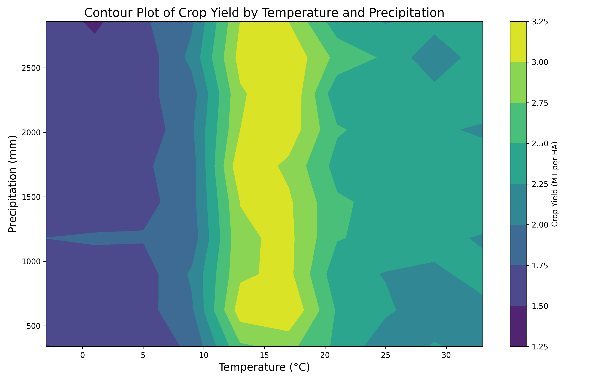

The Problem: Global Climate Change
Knowing that climate change is a rising problem, we wanted to get an overview of our data which had 10,000 observations. To identify key correlations between climate change factors and agricultural yield, we started our investigation by generating a heatmap correlation matrix to pinpoint the areas that require closer examination.
Global Temperature Change
Based on the correlation matrix, we found the strongest relationship between economic impact and crop yields. This makes sense, as these variables are directly related: A high crop yield directly contributes towards a high economic impact (Though the extent of this impact varies by regional economy). Because we aim to explore the causes of crop yield rather than the effects, we will explore our second-highest correlative relationship: average temperature and crop yields.
This section will focus on global changes in temperature over the years and global impacts on crop yield.
The map below shows the change in temperatures from 1990 to 2024. To capture trends more accurately, we calculated the average temperature for each country over two-year spans (1990-1991 and 2023-2024). This approach helps smooth out any anomalies, though one limitation is the absence of precise monthly data, which affects the comparison. Despite this, the temperature differences over the past three decades are striking, and we aim to explore how this shift impacts crop yields.
Temperature and Crop Yields
To understand the implications of climate and temperature changes, we wanted to understand what the general impact that temperature has on crop yields. We utilized a contour plot to visualize the relationship between temperature, precipitation, and crop yield.
From the plot, it is clear that crop yields are at their most plentiful in a temperature range of approximately 10–20°C, with diminishing returns as temperatures move away from this optimal range. The colder temperatures range (<= 10°C) shows lower crop yields than the hotter temperature range (>= 20°C). This suggests that we can expect crop yields in regions hotter than the ideal temperature range of 10–20°C to still perform better than in a region with temperatures below the ideal range. The plot also displays that there is no significant influence on crop yields from precipitation, with the countours being extremely vertical. From this, we can conclude that temperature contributes more to the to definition of ideal conditions for crop productivity than precipitation, confirming our initial findings.
Country Crop Yields Over Time
As we previously identified, CO2 emissions is the second most significantly correlated variable to crop yield (although the correlation is relatively weak). We wanted to investigate if the relationship between CO2 emissions and crop yield differs between high-performing and low-performing crop yield countries, so we analyzed the change in crop yields from 1990 to 2024. The chart below compares the average crop yield of countries in 1990 and 2024, and shows the top three countries with the greatest crop yield improvements—Brazil, Russia, and China—and the bottom three countries with the least crop yield improvement—Nigeria, Argentina, and the USA.
Regional Analysis: CO2 Emissions vs Crop Yields
To analyze the difference in C02 emissions of high and low crop yield countries and if it differed / affected the crop production in these countries, we took 1 counry from the top 3 (Russia), and 1 from the bottom (Nigeria) to visualize how CO2 emissions differed. Through the graph below as well as a correlation analysis, we found that the correlation coefficients were very similar between the two countries (Nigeria: -0.10, Russia: -0.09) meaning that while CO2 emissions likely do decrease crop yields to a degree, this is not the only factor.
Rising temperatures, CO2 emissions, and agricultural yield
From the analysis above, it is clear to see that temperature and CO2 emissions have slight correlation with crop yields across the globe and though given all the factors that contribute to agricultural yields, it is difficult to identify just one factor that causes a increase and / or decrease in crop yields. Even between high-yield and low-yield countries, the same trends apply meaning that other factors are likely influencing their crop yields beyond simply temperature or CO2 emissions. According to studies, "key crops have 'declined' by around 5% due to climate change. Yet global yields have increased by more than 200% over this period. What this “5% decline” actually means is that yields are 5% lower than they would have been in a world without climate change" (ourworldindata.org). In other words, technology is also evolving to combat environmental factors that are beyond our direct control through adaption strategies, fertilizer use, etc. To better understand this, we dive deeper into looking at looking at what adaptation strategies have been the most impactful so far and if these have had an impact on crop yields.